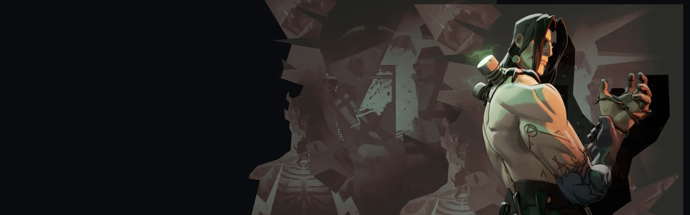

Bateria de Dor Pain Battery Sofrer dano o carrega; quando cheio, ativá-lo dispara raios de choque que causam dano espiritual uma vez em cada alvo. Partida Rápida Jumpstart Eletrocuta Victor com dano espiritual e depois dá regeneração de vida e velocidade extras que se dissipam com o tempo. Aura de Sofrimento Aura of Suffering Canalizada para liberar dor que fere inimigos próximos e o próprio Victor ao longo do tempo, com dano crescente quanto mais tempo canalizar. Reanimação Chocante Shocking Reanimation Passiva: após sofrer dano letal, Victor libera uma onda retardadora e revive após um breve canal, causando dano espiritual e atordoando inimigos próximos.Lutador resistente, forte em segurar a linha de frente.
História
Muitas pessoas passam a vida inteira se perguntando quem realmente são. Para Victor, essa questão existencial se complica ainda mais quando ele acorda em uma mesa mortuária sem saber de seu criador, por que foi feito e de quem é feito. Agora procurando respostas nos cinco distritos, Victor espera encontrar alguém que possa identificar qualquer parte dele.
História oficial do jogo, traduzida automaticamente para o português.
Números reais
Habilidades
Sofrer dano o carrega; quando cheio, ativá-lo dispara raios de choque que causam dano espiritual uma vez em cada alvo.
Eletrocuta Victor com dano espiritual e depois dá regeneração de vida e velocidade extras que se dissipam com o tempo.
Canalizada para liberar dor que fere inimigos próximos e o próprio Victor ao longo do tempo, com dano crescente quanto mais tempo canalizar.
Passiva: após sofrer dano letal, Victor libera uma onda retardadora e revive após um breve canal, causando dano espiritual e atordoando inimigos próximos.
Builds mais usadas
24.198 partidas registradas com esta build.
Espírito Extra (800) · Regeneração Extra (800) · Pulso de Tormento (3.200) · Regeneração Mística (800) · Regeneração Radiante (3.200) · Impulsionador de cura (1.600) · Roubo de Vida Espiritual (1.600) · Velocidade duradoura (1.600) · Traço Cinético (1.600) · Ovo de Ganso Dourado (800)
15.314 partidas registradas com esta build.
Espírito Extra (800) · Regeneração Extra (800) · Espírito Melhorado (1.600) · Pulso de Tormento (3.200) · Botas de corrida (800) · Roubo de Vida Espiritual (1.600) · Impulsionador de cura (1.600) · Velocidade duradoura (1.600) · Expansão Mística (800) · Vulnerabilidade Mística (1.600)
13.984 partidas registradas com esta build.
Espírito Extra (800) · Regeneração Extra (800) · Espírito Melhorado (1.600) · Pulso de Tormento (3.200) · Roubo de Vida Espiritual (1.600) · Velocidade duradoura (1.600) · Impulsionador de cura (1.600) · Vulnerabilidade Mística (1.600) · Expansão Mística (800) · Infusor (6.400)
Confrontos reais
 Paradox — 60.5% de vitória
Paradox — 60.5% de vitória Pocket — 60.2% de vitória
Pocket — 60.2% de vitória Sinclair — 59.3% de vitória
Sinclair — 59.3% de vitória Mirage — 59.2% de vitória
Mirage — 59.2% de vitória Shiv — 59.0% de vitória
Shiv — 59.0% de vitória The Doorman — 58.8% de vitória
The Doorman — 58.8% de vitória
 Graves — 48.2% de vitória
Graves — 48.2% de vitória Paige — 48.3% de vitória
Paige — 48.3% de vitória Rat King — 48.9% de vitória
Rat King — 48.9% de vitória Kelvin — 49.3% de vitória
Kelvin — 49.3% de vitória Baba — 49.3% de vitória
Baba — 49.3% de vitória Seven — 49.6% de vitória
Seven — 49.6% de vitória
Ver a página de counters do Victor
O que upar primeiro
Nível por nível, na ordem que os jogadores mais usam em partidas de verdade. A porcentagem mostra quantos escolheram aquela habilidade naquele nível.
Melhores duplas
Heróis que mais ganham jogando junto com ele, em partidas reais (pelo menos 1.500 partidas juntos).
- Rat King64,8%
- Paige61,5%
- Graves60,6%
- Seven60,2%
 Haze59,7%
Haze59,7%
- Pocket49,2%
- Shiv49,4%
 Solomon49,7%
Solomon49,7%
Rota (lane)
Na rota, cada lado joga em dupla. Estes números são de confrontos reais: a diferença de almas é medida com o jogo já começado, então almas no verde significa que ele costuma estar na frente.
- Graves — 44,4% de vitória +14 almas (1.650 partidas)
- Paige — 46,2% de vitória −59 almas (2.834 partidas)
- Haze — 46,5% de vitória −287 almas (6.640 partidas)
- Seven — 46,7% de vitória +221 almas (2.593 partidas)
- Baba — 46,8% de vitória −410 almas (1.820 partidas)
 Celeste — 47,0% de vitória −194 almas (236 partidas)
Celeste — 47,0% de vitória −194 almas (236 partidas)- Rat King — 48,2% de vitória −275 almas (18.744 partidas)
 Bebop — 48,6% de vitória −656 almas (623 partidas)
Bebop — 48,6% de vitória −656 almas (623 partidas)
 Rem — 59,5% de vitória +91 almas (1.714 partidas)
Rem — 59,5% de vitória +91 almas (1.714 partidas) Mina — 57,3% de vitória +49 almas (2.504 partidas)
Mina — 57,3% de vitória +49 almas (2.504 partidas) Lady Geist — 56,4% de vitória +40 almas (388 partidas)
Lady Geist — 56,4% de vitória +40 almas (388 partidas)
Histórico de win rate
14/09: 51.6% → 02/11: 53.3% → 21/12: 57.5% → 08/02: 55.9% → 29/03: 49.2% → 17/05: 55.7% → 05/07: 53.1% → 23/08: 56.9% → 11/10: 54.1%